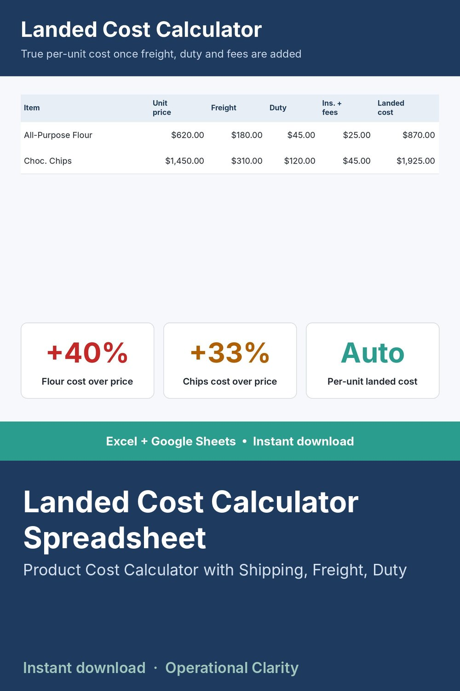

Landed Cost Calculator Spreadsheet

STOP PRICING OFF THE VENDOR'S STICKER PRICE.
The unit price a vendor quotes you is not what that item actually costs you. Freight, duty, insurance, and other fees can add 20-40% on top - and if you're not accounting for that, every margin calculation you make is wrong.
WHAT IT DOES
- Log unit price, quantity, freight, duty/customs, insurance, and other fees per shipment
- Automatically calculates total landed cost and landed cost per unit
- Dashboard shows total landed spend and your average markup over sticker price, across every shipment logged
WHAT'S INCLUDED
- Excel file (.xlsx) - works in Excel 2010 and newer, no macros, no add-ins needed
- Start Here tab with plain-English setup instructions
- Sample data included so you can see it working before you enter your own numbers
WHO THIS IS FOR
Anyone importing goods or buying from out-of-state suppliers who wants to know their real per-unit cost before they set a sell price - not after a surprise customs bill.
INSTANT DOWNLOAD - no physical item will be shipped. Because this is a digital product, all sales are final.